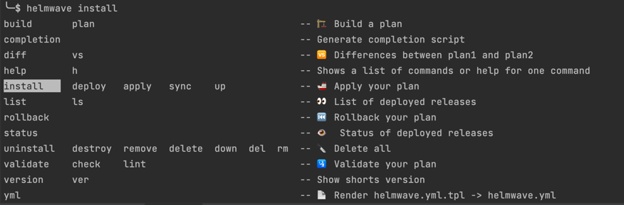

🛠 CLI Reference
NAME:
helmwave - is like docker-compose for helm
USAGE:
helmwave [global options] command [command options] [arguments...]
VERSION:
0.27.3
DESCRIPTION:
This tool helps you compose your helm releases!
0. $ helmwave yml
1. $ helmwave build
2. $ helmwave up
COMMANDS:
build 🏗 Build a plan
diff, vs 🆚 Show Differences
up 🚢 Apply your plan
list, ls 👀 List of deployed releases
rollback ⏮ Rollback your plan
status 👁️ Status of deployed releases
down 🔪 Delete all
validate 🛂 validate your plan
yml 📄 render helmwave.yml.tpl -> helmwave.yml
schema generate json schema
graph show graph
version, ver show shorts version
completion generate completion script
help, h Shows a list of commands or help for one command
GLOBAL OPTIONS:
--log-format value You can set: [ text | json | pad | emoji ] (default: "emoji") [$HELMWAVE_LOG_FORMAT]
--log-level value You can set: [ debug | info | warn | fatal | panic | trace ] (default: "info") [$HELMWAVE_LOG_LEVEL, $HELMWAVE_LOG_LVL]
--log-color Force color (default: true) [$HELMWAVE_LOG_COLOR]
--log-timestamps Add timestamps to log messages (default: false) [$HELMWAVE_LOG_TIMESTAMPS]
--help, -h show help
--version, -v print the version
step #0: yml
It allows render helmwave.yml.tpl to helmwave.yml
Options
--tpl value Main tpl file (default: "helmwave.yml.tpl") [$HELMWAVE_TPL]
--file value, -f value Main yml file (default: "helmwave.yml") [$HELMWAVE_YAML, $HELMWAVE_YML]
--templater value Select template engine: sprig or gomplate (default: "sprig") [$HELMWAVE_TEMPLATER, $HELMWAVE_TEMPLATE_ENGINE]
step #1: build
This command generates .helmwave/
--plandir value, -p value Path to plandir (default: ".helmwave/") [$HELMWAVE_PLANDIR, $HELMWAVE_PLAN]
--tags value, -t value It allows you choose releases for sync. Example: -t tag1 -t tag3,tag4 [$HELMWAVE_TAGS]
--match-all-tags Match all provided tags (default: false) [$HELMWAVE_MATCH_ALL_TAGS]
--diff-mode value You can set: [ live | local ] (default: "live") [$HELMWAVE_DIFF_MODE]
--yml Auto helmwave.yml.tpl --> helmwave.yml (default: false) [$HELMWAVE_AUTO_YML, $HELMWAVE_AUTO_YAML]
--wide value Show line around change (default: 5) [$HELMWAVE_DIFF_WIDE]
--show-secret Show secret in diff (default: true) [$HELMWAVE_DIFF_SHOW_SECRET]
--tpl value Main tpl file (default: "helmwave.yml.tpl") [$HELMWAVE_TPL]
--file value, -f value Main yml file (default: "helmwave.yml") [$HELMWAVE_YAML, $HELMWAVE_YML]
--templater value Select template engine: sprig or gomplate (default: "sprig") [$HELMWAVE_TEMPLATER, $HELMWAVE_TEMPLATE_ENGINE]
step #2: Working with plan
build
Helmwave builds plan in complete plan directory (.helmwave by default) that other commands use.
Plan includes:
- Downloaded remote charts
- Downloaded and templated all used values files
- Rendered manifests for each release
- Markdown file with dependencies graph as mermaid diagram
- Rendered
helmwave.ymlthat uses plan files (e.g. downloaded chart and values)
NAME:
helmwave build - 🏗 Build a plan
USAGE:
helmwave build [command options] [arguments...]
OPTIONS:
--plandir value, -p value path to plandir (default: ".helmwave/") [$HELMWAVE_PLANDIR, $HELMWAVE_PLAN]
--tags value, -t value [ --tags value, -t value ] build releases by tags: -t tag1 -t tag3,tag4 [$HELMWAVE_TAGS]
--match-all-tags match all provided tags (default: false) [$HELMWAVE_MATCH_ALL_TAGS]
--graph-width value set ceil width: 1 – disable graph; 0 – full names; N>1 – show only N symbols; N<0 – drop N symbols from end. (default: 0) [$HELMWAVE_GRAPH_WIDTH]
--skip-unchanged skip unchanged releases (default: false) [$HELMWAVE_SKIP_UNCHANGED]
--diff-mode value You can set: [ live | local | none ] (default: "live") [$HELMWAVE_DIFF_MODE]
--charts-cache-dir value enable caching of helm charts in specified directory [$HELMWAVE_CHARTS_CACHE]
--yml auto helmwave.yml.tpl --> helmwave.yml (default: false) [$HELMWAVE_AUTO_YML, $HELMWAVE_AUTO_YAML]
--wide value show line around changes (default: 5) [$HELMWAVE_DIFF_WIDE]
--show-secret show secret in diff (default: true) [$HELMWAVE_DIFF_SHOW_SECRET]
--3-way-merge show 3-way merge diff (default: false) [$HELMWAVE_DIFF_3_WAY_MERGE]
--tpl value main tpl file (default: "helmwave.yml.tpl") [$HELMWAVE_TPL]
--file value, -f value main yml file (default: "helmwave.yml") [$HELMWAVE_YAML, $HELMWAVE_YML]
--templater value select template engine: [ sprig | gomplate ] (default: "sprig") [$HELMWAVE_TEMPLATER, $HELMWAVE_TEMPLATE_ENGINE]
--help, -h show help
up
Helmwave will install repositories and helm-releases from plan.
NAME:
helmwave up - 🚢 apply your plan
USAGE:
helmwave up [command options] [arguments...]
OPTIONS:
--build auto build (default: false) [$HELMWAVE_AUTO_BUILD]
--kubedog enable/disable kubedog (default: false) [$HELMWAVE_KUBEDOG_ENABLED, $HELMWAVE_KUBEDOG]
--kubedog-status-interval value interval of kubedog status messages (default: 5s) [$HELMWAVE_KUBEDOG_STATUS_INTERVAL]
--kubedog-start-delay value delay kubedog start, don't make it too late (default: 1s) [$HELMWAVE_KUBEDOG_START_DELAY]
--kubedog-timeout value timeout of kubedog multitrackers (default: 5m0s) [$HELMWAVE_KUBEDOG_TIMEOUT]
--kubedog-log-width value Set kubedog max log line width (default: 140) [$HELMWAVE_KUBEDOG_LOG_WIDTH]
--progress Enable progress logs of helm (INFO log level) (default: false) [$HELMWAVE_PROGRESS]
--parallel-limit value Limit amount of parallel releases (default: 0) [$HELMWAVE_PARALLEL_LIMIT]
--plandir value, -p value path to plandir (default: ".helmwave/") [$HELMWAVE_PLANDIR, $HELMWAVE_PLAN]
--tags value, -t value [ --tags value, -t value ] build releases by tags: -t tag1 -t tag3,tag4 [$HELMWAVE_TAGS]
--match-all-tags match all provided tags (default: false) [$HELMWAVE_MATCH_ALL_TAGS]
--graph-width value set ceil width: 1 – disable graph; 0 – full names; N>1 – show only N symbols; N<0 – drop N symbols from end. (default: 0) [$HELMWAVE_GRAPH_WIDTH]
--skip-unchanged skip unchanged releases (default: false) [$HELMWAVE_SKIP_UNCHANGED]
--diff-mode value You can set: [ live | local | none ] (default: "live") [$HELMWAVE_DIFF_MODE]
--charts-cache-dir value enable caching of helm charts in specified directory [$HELMWAVE_CHARTS_CACHE]
--yml auto helmwave.yml.tpl --> helmwave.yml (default: false) [$HELMWAVE_AUTO_YML, $HELMWAVE_AUTO_YAML]
--wide value show line around changes (default: 5) [$HELMWAVE_DIFF_WIDE]
--show-secret show secret in diff (default: true) [$HELMWAVE_DIFF_SHOW_SECRET]
--3-way-merge show 3-way merge diff (default: false) [$HELMWAVE_DIFF_3_WAY_MERGE]
--tpl value main tpl file (default: "helmwave.yml.tpl") [$HELMWAVE_TPL]
--file value, -f value main yml file (default: "helmwave.yml") [$HELMWAVE_YAML, $HELMWAVE_YML]
--templater value select template engine: [ sprig | gomplate ] (default: "sprig") [$HELMWAVE_TEMPLATER, $HELMWAVE_TEMPLATE_ENGINE]
--help, -h show help
down
Helmwave will uninstall helm-releases from plan.
NAME:
helmwave down - 🔪 Delete all
USAGE:
helmwave down [command options] [arguments...]
OPTIONS:
--build auto build (default: false) [$HELMWAVE_AUTO_BUILD]
--plandir value, -p value path to plandir (default: ".helmwave/") [$HELMWAVE_PLANDIR, $HELMWAVE_PLAN]
--tags value, -t value [ --tags value, -t value ] build releases by tags: -t tag1 -t tag3,tag4 [$HELMWAVE_TAGS]
--match-all-tags match all provided tags (default: false) [$HELMWAVE_MATCH_ALL_TAGS]
--graph-width value set ceil width: 1 – disable graph; 0 – full names; N>1 – show only N symbols; N<0 – drop N symbols from end. (default: 0) [$HELMWAVE_GRAPH_WIDTH]
--skip-unchanged skip unchanged releases (default: false) [$HELMWAVE_SKIP_UNCHANGED]
--diff-mode value You can set: [ live | local | none ] (default: "live") [$HELMWAVE_DIFF_MODE]
--charts-cache-dir value enable caching of helm charts in specified directory [$HELMWAVE_CHARTS_CACHE]
--yml auto helmwave.yml.tpl --> helmwave.yml (default: false) [$HELMWAVE_AUTO_YML, $HELMWAVE_AUTO_YAML]
--wide value show line around changes (default: 5) [$HELMWAVE_DIFF_WIDE]
--show-secret show secret in diff (default: true) [$HELMWAVE_DIFF_SHOW_SECRET]
--3-way-merge show 3-way merge diff (default: false) [$HELMWAVE_DIFF_3_WAY_MERGE]
--tpl value main tpl file (default: "helmwave.yml.tpl") [$HELMWAVE_TPL]
--file value, -f value main yml file (default: "helmwave.yml") [$HELMWAVE_YAML, $HELMWAVE_YML]
--templater value select template engine: [ sprig | gomplate ] (default: "sprig") [$HELMWAVE_TEMPLATER, $HELMWAVE_TEMPLATE_ENGINE]
--help, -h show help
$ helmwave down
[🙃 aka INFO]: ✅ frontend@test uninstalled!
[🙃 aka INFO]: ✅ database@test uninstalled!
[🙃 aka INFO]: ✅ backend@test uninstalled!
ls
Helmwave try getting list of helm-releases from plan.
$ helmwave ls
[🙃 aka INFO]: Should be 3 releases
NAME | NAMESPACE | REVISION | UPDATED | STATUS | CHART | VERSION
-----------+-----------+----------+--------------------------------+----------+-------+----------
frontend | test | 1 | 2021-11-10 04:41:23.330989 | deployed | this | 0.1.0
| | | +0300 MSK | | |
database | test | 1 | 2021-11-10 04:41:23.353473 | deployed | this | 0.1.0
| | | +0300 MSK | | |
backend | test | 1 | 2021-11-10 04:41:23.270076 | deployed | this | 0.1.0
| | | +0300 MSK | | |
status
Helmwave try getting status of helm-releases from plan.
$ helmwave status
[🙃 aka INFO]: Status of frontend@test
status: deployed
revision: 1
name: frontend
namespace: test
chart: frontend-0.1.0
last deployed: 2021-11-10 04:41:23.330989 +0300 MSK
[🙃 aka INFO]: Status of database@test
status: deployed
revision: 1
name: database
namespace: test
chart: database-0.1.0
last deployed: 2021-11-10 04:41:23.353473 +0300 MSK
[🙃 aka INFO]: Status of backend@test
name: backend
namespace: test
chart: backend-0.1.0
last deployed: 2021-11-10 04:41:23.270076 +0300 MSK
status: deployed
revision: 1
rollback
Rollback helm-releases from plan.
$ helmwave rollback
[🙃 aka INFO]: ✅ frontend@test rollback!
[🙃 aka INFO]: ✅ database@test rollback!
[🙃 aka INFO]: ✅ backend@test rollback!
graph
Show only graph of helm releases from plan.
You can use --graph-width option to set width of graph.
validate
Helmwave will validate plan.
diff
Diff has 2 subcommands
helmwave diff livewill diff with manifests in the k8s-clusterhelmwave diff planwill diff with your another local plan.
Logs
Logs options. Helmwave use logrus as internal logger.
Log Format
Helmwave supports several log-format
| features | text |
json |
pad |
emoji (default) |
|---|---|---|---|---|
| Color | ✅ | ❌ | ✅ | 🌈 |
| Human readable | 🧐 | 🤖 | 🧐🧐 | ✅ |
| Performance | 🚀 | 🐢 | ✈️ | 🐢 |
| Module | TextFormatter (in-built logrus formatter) | JSONFormatter (in-built logrus formatter) | TextFormatter (in-built logrus formatter) | logrus-emoji-formatter special for helmwave |
Log Level
| _ | info (default) |
warn |
debug |
fatal |
panic |
trace |
|---|---|---|---|---|---|---|
| general info | ✅ | ✅ | ✅ | ✅ | ✅ | ✅ |
| incompatible version | ❌ | ✅ | ✅ | ✅ | ✅ | ✅ |
| helm-debug | ❌ | ❌ | ✅ | ✅ | ✅ | ✅ |
| file content | ❌ | ❌ | ✅ | ✅ | ✅ | ✅ |
| helm manifests, bug report | ❌ | ❌ | ❌ | ❌ | ❌ | ✅ |
info is preferred loglevel.
You can enable --progress flag for helm-debug output.
How to use?
helmwave --log-color=true --log-level=debug --log-format=pad <cmd>
or
export HELMWAVE_LOG_FORMAT=pad
export HELMWAVE_LOG_LEVEL=debug
export HELMWAVE_LOG_COLOR=true
helmwave <cmd>
Get Version
Long version
$ helmwave --version
helmwave version 0.27.3
$ helmwave -v
helmwave version 0.27.3
Short version
$ helmwave version
0.27.3
$ helmwave ver
0.27.3
Completion
Bash
Add this code to your ~/.bashrc
source <(helmwave completion bash)
echo "source <(helmwave completion bash)" >> ~/.bashrc

ZSH
Add this code to your ~/.zshrc
source <(helmwave completion zsh)
echo "source <(helmwave completion zsh)" >> ~/.zshrc
